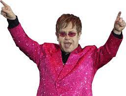

Elton John no Brasil
Como foram as aparições do musico em território Brasileiro?

Elton_John
- A primeira vez que Elton esteve no Brasil foi no ano de 1978, para passar o carnaval, junto com os amigos Rod Stewart e Peter Frampton. Não houve espetáculos durante a sua estadia.
- Tocou no dia 23 de setembro de 2011 no Rio de Janeiro na abertura do Rock in Rio.
- Em fevereiro de 2014, apresentou-se em Goiânia, Fortaleza, Rio de Janeiro e Salvador.
- Voltou ao país em 2017, para tocar nas cidades de Curitiba, Porto Alegre, São Paulo e Rio de Janeiro..